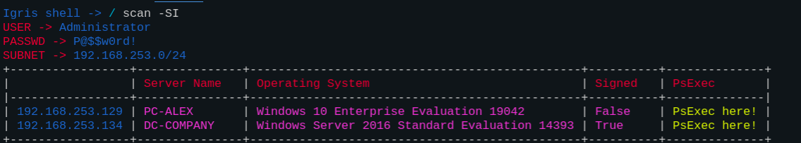
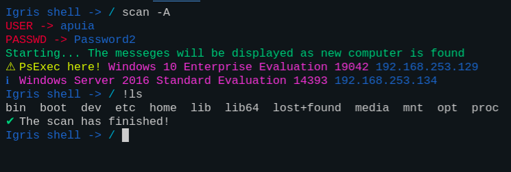

Scan command¶
Possible Arguments¶
Using -h flag¶
For this command I have implemented:
Usage: scan [-h] [-SI] [-A] [-SS]
Tool to know if there is a possibility to perform psexec.
Without arguments this tool will scan the Subnet
optional arguments:
-h, --help show this help message and exit
-SI, --show_info It shows the information of all the subnets of the current user
and password specified in the settable variables(USER, PASSWD)
-A, --asynchronous Run the command asynchronous. To use this functionality,
the application must be running in a terminal that supports VT100
control characters and readline
-SS, --show_settable Show Settable variables for this command
Without using flags¶
As you can see in the gif below, the command searches for computers where psexec can be run. The command will try:
Connect to a remote machine using smb.
Login to the remote machine -> Show OS info.
Know if the user has administrator permissions by trying to access the $ADMIN directory. -> Show psexec possibility
Using -SS flag¶
So, If I want to know the necessary settable variables for this command, I have to use scan -SS:
scan -SS
+------------+------------------+
| Variable | Value |
|------------+------------------|
| SUBNET | 192.168.253.0/24 |
| USER | Administrator |
| PASSWD | P@$$w0rd! |
+------------+------------------+
Using -SI flag¶
With this flag the command will show all the captured information of the current user and passwd (Use the variables USER and PASSWD).
Using -A flag¶
With this flag you can execute the scan command asynchronously.
